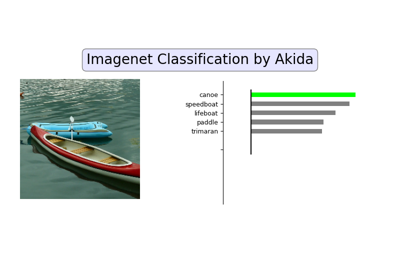
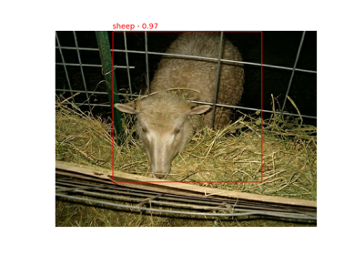
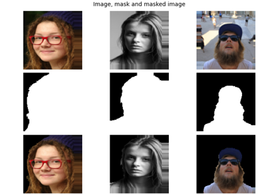
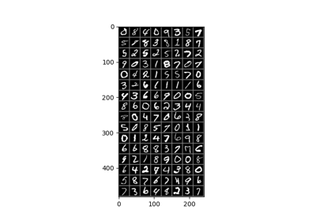
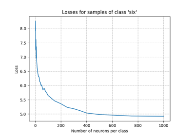

Akida examples
To learn how to use Akida, the QuantizeML and CNN2SNN toolkits and check the Akida accelerator performance against some commonly used datasets please refer to the sections below.
General examples


AkidaNet/ImageNet inference
DS-CNN/KWS inference
Age estimation (regression) example
Age estimation (regression) example
Transfer learning with AkidaNet for PlantVillage
Transfer learning with AkidaNet for PlantVillage

YOLO/PASCAL-VOC detection tutorial
YOLO/PASCAL-VOC detection tutorial

Segmentation tutorial

PyTorch to Akida workflow
Quantization


Spatiotemporal examples

Efficient online eye tracking with a lightweight spatiotemporal network and event cameras
Efficient online eye tracking with a lightweight spatiotemporal network and event cameras
Edge examples (Akida 1.0 only)
Akida vision edge learning


Tips to set Akida edge learning parameters
Tips to set Akida edge learning parameters